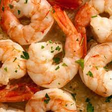

Creamy Garlic Shrimp

Description
The below will walk you through what is needed to make Creamy Garlic Shrimp. Enjoy!
Ingredients
- Vegetable oil
- Shrimp
- Salt
- Pepper
- Butter
- Garlic
- White wine
- Heavy cream
- Italian seasoning
- Cheddar cheese
- Fresh parsley
Directions
- Heat oil in a large skillet over medium high heat for 2 minutes until the hot oil is sizzling hot. Add shrimp and sear for 2-3 minutes on each side until they turn pink and are fully cooked through. Season with salt and pepper. Set aside on a plate.
- Add butter and garlic to the same skillet and sauté until fragrant, about one minute. Then, add wine and stir well to combine, about one minute. Add heavy cream, Italian seasoning and white cheddar. Stir well and bring the sauce to a simmer. Reduce the heat to medium and keep stirring until thickened to a desired consistency.
- Return the cooked shrimp to the skillet and toss well to coat. Garnish with parsley and serve immediately with pasta, rice, or mashed potatoes.